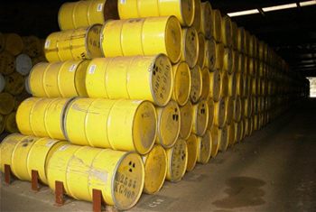
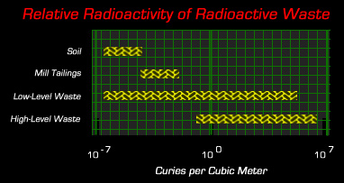

|  |
In the United States, it is the process from which the waste was produced, and not the characteristics or radioactivity of the waste itself, which determines the waste's classification. This is the fundamental problem with radioactive waste classification in the United States. Radioactive waste is divided into 5 legal categories for classification purposes:
The Five Waste Types:
Primarily composed of Spent Nuclear Fuel (SNF), but also waste
produced while reprocessing this reactor byproduct.
Spent fuel is made up of fuel rods that have been withdrawn from a reactor after undergoing fission.
Fuel rods last from 1-3 years before being "spent."
Reprocessing waste is generated by
chemical reprocessing of SNF and irradiated targets, including liquid
waste produced directly from reprocessing and any solid waste derived from the
liquid that contains a combination of transuranic and fission product nuclides
in quantities that require permanent isolation.
High-level waste contains highly concentrated radioactive fission products,
hazardous chemicals, and toxic heavy metals.
It is also a mixed waste because it has highly corrosive
components or has organics or heavy metals that are regulated under RCRA.
It is usually found in the form of a liquid, a solid saltcake, a
sludge, or a dry powdery calcine. HLW is primarily in the form of spent fuel
discharged from commercial nuclear power reactors. The DOE's plans are to ship HLW to
the geologic repository at Yucca Mountain. Interim storage is also planned in
Skull Valley, Utah by a consortium of 8
utility companies named Private Fuel Storage.
The TRU classification is used almost exclusively by the DOE. Waste generated outside of DOE facilities which meets the definition of TRU is generally classified as LLW in either the "Class C" or "Greater than Class-C" categories. The reason for this is that the NRC categories of LLW had not yet been implemented or developed when the DOE required an intermediate level of waste, which were not high-level waste, or what they had defined as low-level waste at the time. Thus, the "low-level" waste category may consist of waste which qualifies as TRU waste under DOE rules, but TRU waste must always meet the exact definition to be called transuranic waste.
Transuranic waste is not simply made up of materials that appear after uranium on the periodic table, as the name implies. TRU waste contains more than 100 nanocuries (3700 becquerels) of alpha-emitting transuranic isotopes, with half-lives greater than twenty years, per gram of waste, except for (1) high-level radioactive waste; (2) wastes that the Secretary of Energy has determined, with the concurrence of the EPA, do not need the degree of isolation required by EPA's high level waste rule (40 CFR 191); or (3) has approved for disposal on a case-by-case basis in accordance with NRC's radioactive land disposal regulation. TRU is mainly produced from the reprocessing of spent nuclear fuel, reactor fuel assembly, and the use of plutonium to fabricate nuclear weapons. TRU waste is categorized as either Contact Handled (CH) or Remote Handled (RH). RH-TRU is any transuranic waste with a surface dose rate of 200 millirem per hour or greater, and CH-TRU is any TRU waste with levels which are lower. DOE is currently proceeding with plans for TRU waste disposal at the geologic repository called the Waste Isolation Pilot Plant (WIPP) near Carlsbad, New Mexico.
A catch-all category of waste defined by U.S. law as all wastes that are not in other categories. DOE Order 435.1 defines low-level waste as waste that contains radioactivity and is not classified as high-level waste, transuranic waste, spent nuclear fuel, or 11(e)(2) byproduct material (as defined in section 11(e)(2) of the Atomic Energy Act of 1954, as amended), or naturally occurring radioactive material. Test specimens of fissionable material irradiated for research and development only, and not for the production of power or plutonium, may be classified as low-level waste. If the material originated from a DOE facility, the transuranic material should be less radioactive than 100 nanocuries per gram and have a halflife of less than 20 years to be LLW.
Radioactivity of the "low-level" waste category varies widely and includes both short- and long-lived isotopes. It encompasses materials that are slightly radioactive trash (such as mops, gloves, and booties) to highly radioactive materials which require extreme caution and handling by remote control, yet do not meet the exact definition of high-level waste, such as control rods from the core of a reactor which regulate and stop nuclear reactions. The "low-level" classification has absolutely nothing to do with the degree of radioactivity or the length of halflife. Additionally, over 90% of LLW that is generated is from nuclear power plants, and includes everything except the spent fuel.
"Low-level" waste is defined by what it is not and consequently is the most broad category of waste. In fact, it was been said that LLW as a bulk category contains more radioactivity than high-level waste, because the amount of material by it's sheer volume has a greater amount of radioactivity in curies. Industries, hospitals and medical, educational, or research institutions; private or government laboratories; and nuclear fuel cycle facilities (e.g., nuclear power reactors and fuel fabrication plants) using radioactive materials generate "low-level" wastes as part of their normal operations. These wastes are generated in many physical and chemical forms and levels of contamination.
|
Class A - Primarily contaminated with shorter-lived radionuclides. - Contains the least radioactive materials in the LLW classes. - Average concentration: 0.1 curies/cubic foot. Class B - More short-lived radionuclides than class A. - Average concentration: 2 curies/cubic foot. Class C - More long- and short-lived radionuclides than classes A or B. - Average concentration: 7 curies/cubic foot. Greater-than-Class C (GTCC) - The most radioactive of all of the LLW classes. - Average concentration: 300 to 2,500 curies/cubic foot. |
• Irradiated Components and Piping -- reactor hardware and pipes that are in continual contact with highly radioactive water for the lifetime of the plant. The metal becomes activated, or radioactive, by the bombardment of neutrons in the reactor area. Also refered to as "irradiated primary system components."
• Control Rods -- from the core of nuclear power plants, these rods regulate and/or stop fission chain-reactions in the reactor by absorbing neutrons.
• Poison Curtains -- also absorb neutrons, but from the water in the reactor core and the irradiated fuel pool
• Resins, Sludges, Filters, and Evaporator Bottoms -- residues and cleaning wastes from the water that circulates around the irradiated fuel in the reactor vessel and in the fuel pool, which which holds the irradiated fuel when it is removed from the core.
• Entire Nuclear Power Plants -- When decommissioned, everything from the entire reactor vessel (minus the spent fuel rods) to the concrete floor is considered "low-level" waste. A typical 1000 megawatt reactor building floor contains 13,000 cubic feet of contaminated concrete, and 1,400 cubic feet of contaminated reinforcing steel bar.
| Solidified Liquids: | Approximately 2 curies per cubic meter |
| Filter/Demineralizer Sludges: | Approximately 10 curies per cubic meter |
| Cartridge Filters: | Approximately 20 curies per cubic meter |
| Demineralizer Resins: | Approximately 160 curies per cubic meter |
| Primary Components: | Between 1000-5000 curies per cubic meter |
|  |
11(e)(2) is generated during uranium milling, where wastes known as tailings are left behind, and in the extraction or concentration of uranium or thorium from ore. Tailings related to DOE operations are slated for cleanup under a program called the Uranium Mill Tailings Remedial Action Program (UMTRAP). Much of the 11(e)(2) byproduct wastes also originates from Cold War bomb development projects which were conducted at sites across the country.
Uranium mill tailings are the earthen residues that remain after the extraction of uranium from ores. Tailings are generated in very large volumes and contain low concentrations of naturally occurring radioactive materials. These materials comprise a potential health hazard; the isotopes of major concern are Radium-226 and its daughter, Radon-222.
In 1978, the Uranium Mill Tailings Remedial Act (UMTRA) was passed, which created a legal definition (section 11(e)(2) of the Atomic Energy Act) of waste generated from extracting uranium or thorium from ore. It did not cover waste from uranium mining, which falls under the NORM category (see below). The reason for this is that uranium mining is not formally considered part of the uranium fuel chain. Interestingly, however, it does cover some waste from uranium conversion (pre-enrichment). Natural ores that are processed for rare-earth or other metals have significant concentrations of radioactive elements. The tailings produced (which consist of the crushed depleted ore and the depleted solution after recovery of metals and rare earths) are not 11(e)(2) material. This is because the ore was not processed primarily for its source material content but for the rare earth or other metal.
DOE created the Formerly Utilized Site Remedial Action Program (FUSRAP) to address radiological contamination at sites used by DOE's predecessor agencies, the Manhattan Engineer District (MED) and the Atomic Energy Commission (AEC) from the 1940s through the 1960s. The FUSRAP program was transferred from the DOE to the Army Corps of Engineers by the Energy and Water Development Appropriations Act for FY98 (P.L. 105-62).
When UMTRA passed, DOE sites which qualified were placed into two categories, either UMTRA Title I or Title II. Title I were sites operated prior to 1978, and Title II were sites operated afterward. Waste from FUSRAP sites is mostly considered 11(e)(2) waste, which may sometimes be an exception to the rules on the waste being related to extraction from ore. At milling sites, contaminated materials such as cattle fencing are classified as 11(e)(2) due to the activities designated at the property. As in other waste categorizations, it is the process from which the waste was produced, and not the characteristics of the waste itself, which determines the classification.
These are radioactive materials not covered under the AEA that are naturally occurring or produced by an accelerator. These materials have been traditionally regulated by States. Natural occuring NORM contains radionuclides (e.g., Ra-226, Rn-222, Th-232, U-238) existing throughout the earth’s crust. NORM waste with more than 2 nCi/g of 226Ra or equivalent is commonly referred to as discrete NORM waste; below this threshold, the waste is referred to as diffuse NORM waste. NORM waste is not covered under the AEA, not a form of LLW, and is not regulated by NRC. Accelerator wastes include accelerator targets, wastes from accelerator maintenance or D&D, and wastes from radiopharmaceutical manufacture.
Discrete NORM wastes have a relatively small volume but large radioactivity and include industrial gauges, old radium watch and industrial dials, radium needles in medical equipment, resins (filters) that remove radioactive radium from public drinking water, and some radiopharmaceutical waste. Diffuse NORM wastes are characterized by a relatively large volume with small radioactivity. These materials result from industrial processes and include: coal ash and slag from utility electrical generation; solid wastes from geothermal energy production; slag, leachate, and tailings from the mining and processing of metals other than uranium or thorium (e.g., copper); sludge from drinking water treatment; scale, sludge, produced water, and equipment from oil and natural-gas production containing NORM; and wastes (phosphogypsum and slag) from mining phosphate ores for fertilizer (ammonium phosphate) production.
Naturally Occurring Radioactive Materials (NORM) is a subset of NARM and refers to materials whose radioactivity has been enhanced (radionuclide concentrations are either increased or redistributed where they are more likely to cause exposure to humans) usually by mineral extraction or processing activities. Examples are exploration and production wastes from the oil and natural gas industry and phosphate slag piles from the phosphate mining industry. This term is not used to describe or discuss the natural radioactivity of rocks and soils, or background radiation, but instead refers to materials whose radioactivity is technologically enhanced by controllable practices such as extraction from underground. Sometimes it is referred to as TENORM.
Other Waste Types:
Mixed waste contains both hazardous waste (as defined by RCRA and its amendments-see below) and any type of radioactive waste (as defined by AEA and its amendments). It is jointly regulated by NRC and EPA (or State-level equivalent agencies). The fundamental and most comprehensive statutory definition is found in the Federal Facilities Compliance Act (FFCA) where Section 1004(41) was added to RCRA: "The term 'mixed waste' means waste that contains both hazardous waste and source, special nuclear, or byproduct material subject to the Atomic Energy Act of 1954." Mixed Low-Level Waste (MLLW) is just mixed waste with a radioactive component consisting of "low-level" radioactive waste.
This is not a waste type category, but should be explained as one would. Some materials which emit low levels of radiation can be petitioned to be classified as exempted from being classified as radioactive waste. This is a legal way of stating that the material is no longer considered radioactive, and can be disposed of as hazardous waste in a RCRA landfill. There is no State or Federal amount stated for what is to be considered as exempted in this manner, and the oversight of regulatory authorities deems what is appropriate in a particular case as defined in 10 CFR 40.13(a) [for Texas see 25 TAC Section 285.251(c)(1)] Some people in the regulatory field mistakenly refer to a figure originating from the US Department of Transportation of 200 mrem/hr, which is an irrelevant limit for freight containers. Not only does the NRC disapprove of this practice, but it is also scoffed at by experienced regulators. Due to the high costs of low-level radioactive waste disposal, exempting material is a fairly common method of handling waste. In many cases, waste is diluted or "cut" with non-radioactive materials by a generator to lower radioactivity to a level which can be deemed as "below regulatory concern" for disposal.
SNM has considerable percentages of fissionable material to be a special concern to management. Includes plutonium, uranium-233, or uranium enriched in the isotopes uranium-233 or uranium-235. SNM is defined in 10 CFR 20.1003 as "(1) Plutonium, uranium-233, uranium enriched in the isotope 233 or in isotope 235, and any other material that the NRC, pursuant to the provisions of section 51 of the AEA, determines to be SNM, but does not include source material; (2) or any material artificially enriched by any of the foregoing but does not include source material." SNM is important in the fabrication of weapons grade materials and as such has strict licensing and handling controls. Management at LLW dumps must demonstrate to have had training and experience handling fissionable materials before the site can be allowed to handle SNM. SNM is obviously a national security issue.
Source Material is the uranium or thorium ores mined from the earth. Source material is defined in 10 CFR 20.1003 as "(1) Uranium, or thorium or any combination of uranium and thorium in any physical or chemical form; or (2) Ores that contain, by weight, one-twentieth of 1 percent (0.05 percent), or more, of uranium, thorium, or any combination or uranium and thorium." Source material does not include special nuclear material or byproduct material.
Waste that is not high-level or transuranic waste, but requires greater confinement than of standard radioactive waste disposal methods.
Depleted uranium (DU) is in such surplus that massive amounts sit stored in corroding tanks at the enrichment plants in gaseous form (uranium hexaflouride- UF6). The primary use of depleted uranium is by the military, which use its characteristics as one of the densest elements known for armor and for aircraft wing counterweights. They also make armor-peircing missles which use a chemical characteristic of DU. When DU weaponry is fired at a tank, it superheats upon impact and burns up, drilling a hole through the target, and dispersing powdered DU throughout the immediate area. When this material is airborne, such as in conditions like Desert Storm in Iraq, it has been found to go downwind anywhere in a 60-mile radius. DU is an alpha emitter, and has an extremely long halflife. As a solid metal, it is not dangerous aside from minor exposure to the skin on contact. Risk is raised considerably when it is in a gas or airborne powder as produced when burned up. The risk of lung cancer is raised, but microscopic particles can also pass through to many parts of the body through the bloodstream.
Veterans and their families have amassed enormous amounts of information on the toxic effects of DU. Many of them have had personal experiences where either themselves or a loved one had contracted medical complications after the Gulf War. Often they had been given nonfunctional treatments based on misdiagnosis by VA doctors, and turned away. They found that they were not alone, and pooled their research with nongovernmental Veterans groups. The main reason the US military denies the effects of DU is simple- if DU is considered a chemical weapon, the US would be harshly criticized for violating the Geneva Convention. (DU is not a "nuclear weapon", since its use does not involve triggering a fission chain-reaction) Many veterans have died, some of them had posed for pictures next to tanks covered in white DU dust in the Middle East. Often, veterans recall that their commanding officers sometimes had worn protective clothing while GI's were not briefed or informed that they were handling a toxic substance.
Hazardous waste is waste which is defined by the Resource Conservation and Recovery Act (RCRA), and does not contain materials which are considered radioactive from a regulatory standpoint. It can be waste which a generator has declared to be hazardous, or contains any of a wide variety of organic and inorganic material, heavy metals, and/or other hazardous constituents.
Some materials are not regulated under RCRA, but are hazardous. These materials are generally considered hazardous under either the Toxic Substances Control Act (TSCA) or the Comprehensive Environmental Response, Compensation and Liability Act (CERCLA, widely known as Superfund), and include contaminants such as PCB's, asbestos, and petroleum products. These materials are not considered hazardous waste, and are called "hazardous substances."